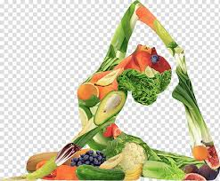

Nutrition
Plant Based Diet
I have been a vegetarian all my life. Grown up a vegetarian so me to follow a plant based diet is not difficult. But not all plant based diets or vegetarian diets are created equal. My journey and obsession with eating healthy and staying fit started when I was expecting my first child, about 15 years ago. I became even more obsessed when I was expecting my second child. When pregnant with my second child I was back in school getting my ECE certification and that's when I started reading about the link between what the mother eats and the health of the child and how it affects the genes of the grandchild! I got really interested in epigenetics and nutrition. I read a lot of books trying to understand and apply what I had read to my diet at home. I experiment with new recipes even if some are rather disastrous.
Nutrition Goals
 Recently I had a really bad case of acid reflux and joint pain, and that go me rethinking about my diet, which I thought was pretty healthy. I was put on strong medication and I was adamant on stopping those. I kickstarted my diet with a one day water fast and then for the next two weeks I only had vegetables and fruits,raw and cooked and nuts and seeds. No dairy, no grains, no oils, no beans or lentils, no citrus fruits and no cooked tomatoes. After two weeks, I re-introduced some grains like rice and oils like avocado oil and olive oil. I added lentils , pressure coooked only, I was doing great! Then I introduced oats, and wheat and I had cheese just one day my acid reflux was back!! All of a sudden it seemed like I had developed allergy to dairy and gluten. How was that even possible? I started reading about it trying the figure out the why. So far, I am doing great on my new diet and very happy. I completely believe in "You are what you eat and what you ate,ate".